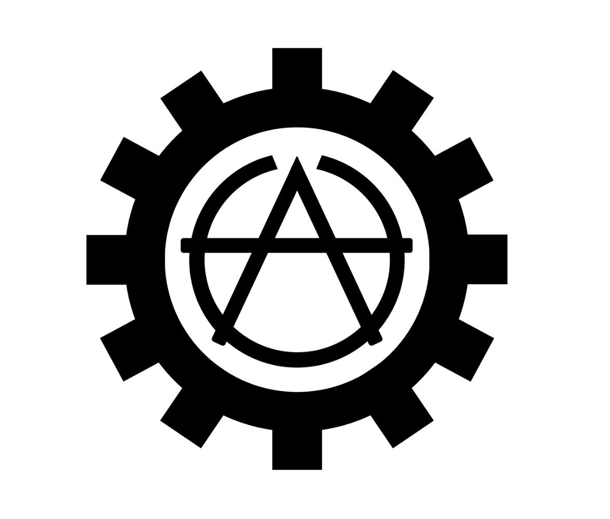
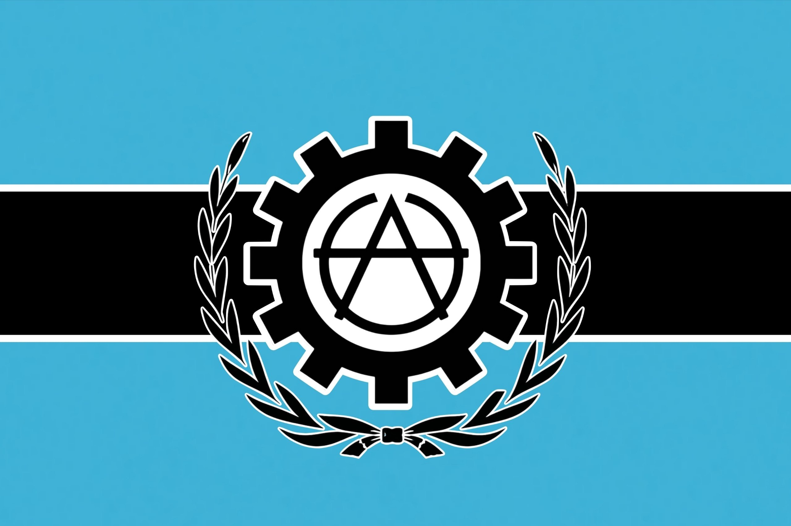
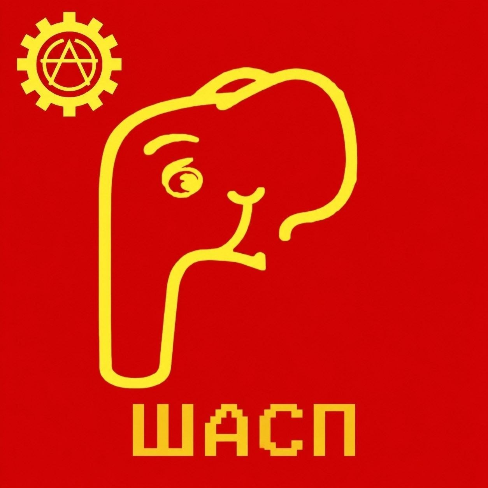
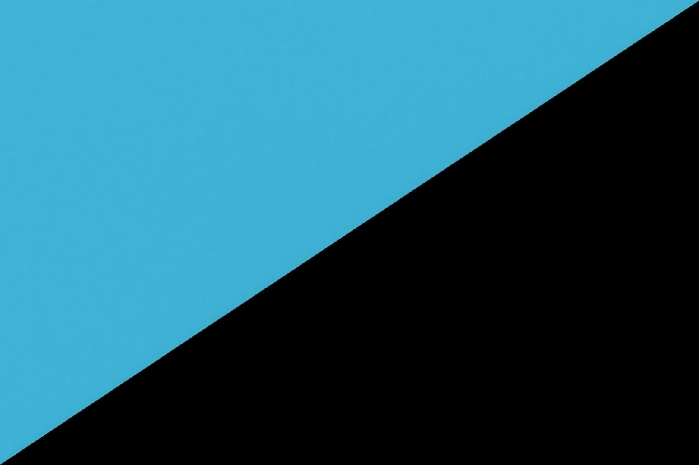
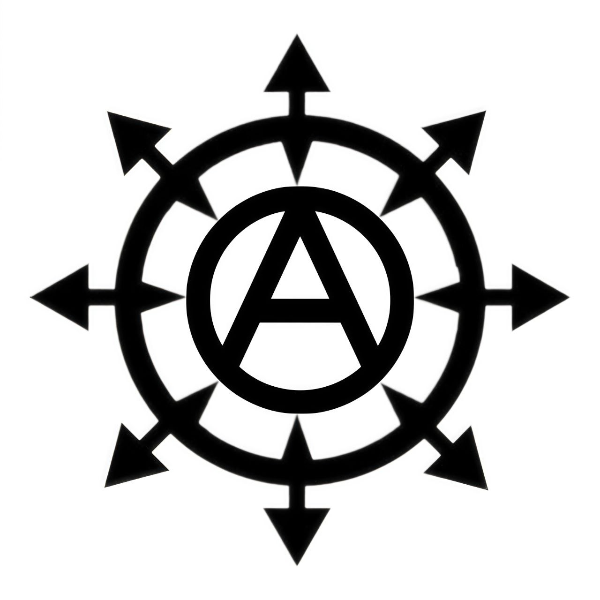
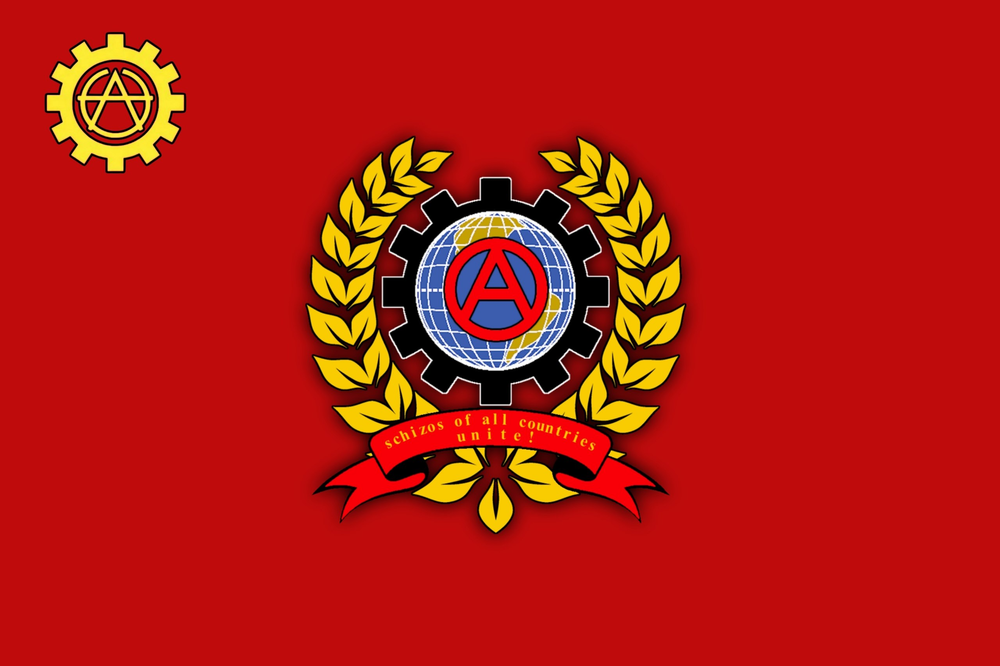

Ты на официальном сайте ШАСП — Шизово-Аутистской Слонистской Партии. Мы — не обычная партия, мы приследуем отличные от политики цели. Наша организация из себя представляет: сообщество свободных, странных и осознанно «неправильных» людей, которые живут по своим правилам и строят собственную реальность.
Что ты найдёшь здесь:
О партии — кто мы, зачем мы и чем живём.
Идеологические материалы — манифесты, трактаты, Шизослов и другие труды, без которых шизу не поведать.
Фотографии партийных работ и ивентов — чем занимаются ячейки, как проходят ивенты и что мы творим в онлайне.
Вступление в партию — если готов пройти анкету и доказать, что ты необходим нам.
Связь с партией — наши соцсети, каналы и чаты, для всех, гле можно пообщаться с партийцами и задать вопросы.
Изучай, вдохновляйся и, если почувствуешь отклик, — присоединяйся к ШАСП!
Да пребудет с тобой Шизогриб. In schizophrenia we trust! 🍄🐘
Изначально был паблик "АГД - Шизомир" и партия НКСП (Национал-Коммунистическая Слонистская Партия). АГД представлял из себя подобие на анонимный имидж борд, но в рамках телеграма и он был строго для шизов. НКСП была партией предшественницей ШАСП, она занималась всем тем же самым, только немного лучше: разработка серверов, создание культуры, гемовых материалов и прочего. В НКСП в основном водились техношизы, а в АГД все подряд, но в частности аутисты и шизы по Жопабомберу.
Итак, в один прекрасный день в АГД проникают слонисты, сначала Тостер, потом Теман, а затем и многие другие члены НКСП. Сначала у них были трудности с адаптацией, но АГД приняло слонов и они стали неотъемлемой частью паблика.
К сожалению все не вечно и обязательно заканчивается, в НКСП начались крупные прицельства между партийцами. Ситуация дошла до такой степени, что элита партии начала покидать этот тонущий корабль. Когда стало ясно, что спасать уже нечего, аутист Ликрес, давно мечтавший о шизовой организации, и слонист Теман, анонимно сговорились в АГД о создании новой партии, к ним почти сразу присоединился еще один аутист - Мидвест, таким образом, 24 апреля была создана подпольная партийная организация, которую в последствии назвали ШАСП, а Теман, Мидвест и Ликрес стали ее первыми комиссарами. ШАСП сразу взяла курс на совместное сосуществование шизов из АГД и техношизов из НКСП. Партия начала развиваться параллельно с тем, как НКСП доживала свои последние дни. Вскоре товарищ Ядерщик официально объявил о развале НКСП. Спустя некоторое время из-за разногласий с Бобром и Тостером Теман решил покинуть ШАСП и инсценировал свою смерть. Дальше партии пришлось развиваться без него и спустя время, она приобрела свой нынешний вид.
Подводя итоги этой истории, можно сказать, что наша партия изначально является слиянием двух шизовых народов: слонистов и агдшников-аутистов, а также перерождением НКСП.
A: Святой покровитель техношизов, верховный вождь и живой символ ШАСП. Носит классические костюмы, шарит за Линукс, живёт в Америке и в одиночку тащит партию своим величием. Лицо с плаката, но на самом деле — опора и легенда.
Q: Какая у вас идеология?
A: Неоидеология*. Слонистская шизократия — слияние анархо-аутизма Жопабомбера (свобода быть странным) и техно-коммунизма слонистов (свобода технологий). Коротко: шиза + открытый код + децентрализация.
Q: Что такое НКСП?
A: Национал-Коммунистическая Слонистская Партия — наша предшественница, где зародился слонизм. Развалилась из-за внутренних дрязг, но её дух живёт в ШАСП.
Q: Че за ДЕД лук?
A: Старый враг НКСП — фиолетовый перекачанный дед с луком на голове, фанател от Гитлера и ненавидел коммунистов. Сейчас устарел, стал мемом из прошлого. Его образ стал симулякром, по которому многие фанатеют. Нынешний дед не имеет отношения к реальности. Так же есть одноимённый паблик в его честь, а его сын — Рыбак.
Q: Чем занимается партия?
A: Строит Шизонет, развивает ячейки, постит щитпосты, пишет манифесты, проводит ивенты, поддерживает DIY и open source, готовится к Дефолту и просто шизеет вместе ради веселья, запуская различные игровые сервера.
Q: Какая цель у партии?
A: Распространить шизу, освободить людей от Системы, изменить меметику общества, создать общество, где шизы будут жить свободно, и пережить крах старого мира. Если кратко — то просто веселиться с такими же дегенератами как мы.
Q: Что такое партия?
A: Не политическая партия, а скорее децентрализованное сообщество, сеть, орден. Мы используем слово «партия» ради пафоса, эстетики и чтобы пугать нормисов. На деле — семья странных.
Q: Че за сойо, чикен/12:22 нейрослоп?
A: Сойо - это нейрослопное (нейрогемовое) видео с ютуба длиной в 2 часа, где на протяжении всего хронометража происходит неописуемый хтонический пиздец, созданный первыми нейросетями способными генерировать видео, оттого это видео и такое странное. 12:22 - таймкод в этом двухчасовом видео, где на протяжении полутора минут на экране можно наблюдать нейрослоп с курочками, который очень понравился участникам НКСП. Некоторые умудряются на это ГУНИТЬ.
Q: Какие люди полезны партии?
A: Творческие (рисуют, пишут, делают мемы), технические (серверы, боты, DIY), идеологические (манифесты, разъяснения), организаторы (ячейки, ивенты) и просто верные товарищи, которые готовы поддерживать.
Q: Чем я смогу заниматься в партии?
A: Всем, что умеешь или хочешь: рисовать, писать тексты, админить, программировать, вести пропаганду, организовывать встречи, помогать новичкам, рыбачить. Главное — делать это под партийным флагом.
Q: Что я получу от членства в партии?
A: Братство, понимание, возможность быть собой без осуждения, участие в общих проектах, звания и медали, а главное — чувство, что ты не один шиз в этом ебанутом мире.
Q: Что такое шиза?
A: Это осознанная свобода разума, состояние когнитивной девиации, когда ты выходишь из-под контроля системы и начинаешь жить по своим правилам. Не диагноз, а путь.
Q: А что если я нихуя не умею / ничего не хочу делать?
A: Ничего страшного, в партии есть место и для созерцателей. Просто будь собой, не разводи срачи, и иногда смотри на наш контент. Возможно, позже захочешь включиться. Если нет — ты всё равно свой.
Q: С чем борется партия?
A: С Системой (государства, корпорации, массовой культурой), с меметикой общества, с ярыми нормисами, с псевдошизами и прицелами. Но главная борьба — за свободу сознания, технологий и права быть собой.
Q: Кто такой дядюшка Сакто?
A: Это неофициальный брат Сакстона Хейла из Team Fortress 2. Ростом примерно 50 см, но с огромным накачанным телом, как у Сакстона. Главная его особенность — огромные выпирающие соски, которые он даёт пососать всем желающим. Отсюда и пошёл знаменитый клич: «Пососи сосочек дядюшки Сакто». Также он выдаёт абонемент «на сосок», а не абас. Фигура культовая, абсурдная и крайне шизовая. Если услышал про него — ты в правильном месте.
Q: Как партийцу получить титул «Скибиди»?
A: Чаще всего этот титул получают маленькие подпартийцы, которые только начинают работать на партию. Реже этот титул выдаётся грибочкам, у которых имя или псевдоним созвучны со «Скибиди». Чтобы получить этот титул вам должно повезти или вы должны заслужить его у Скибиди Дениса.
Этот манифест призван дать наиболее краткую характеристику партии ШАСП, чтобы любой человек мог быстро ознакомиться с тем, что из себя представляет данная организация. Поэтому любой читающий этот документ должен понимать, что здесь все сжато и упрощено, на деле ВСЕ может оказаться несколько сложнее и интереснее. Манифест актуален с момента своего написания и по хз сколько...
Партийность
Начнем с того, что слово "Партия" в названии очень условное и добавлено скорее для пафоса. На самом деле в контексте ШАСП это слово следует трактовать так:
Партия — это не политическая организация в традиционном смысле, а добровольное децентрализованное сообщество шизов, построенное по принципу нитей мицелия. Мы используем слово "партия" отчасти иронически, отчасти как дань старой эстетике НКСП, но по своей сути ШАСП — это сеть единомышленников, культурное движение и виртуальное сообщество, а не структура, стремящаяся к захвату власти или прямому свержению правительства.
Наши съезды, роли, манифесты и ордена — это форма, которая помогает организовывать людей и придавать общности вес, но содержание у неё не политическое, а философско-культурное. Мы не боремся за купюры и не участвуем в выборах. Мы строим цифровую инфраструктуру, создаём мемы, распространяем меметическую идею шизы, а не собираем людей для прихода к власти.
Мы понимаем, что когда человек впервые слышит "партия ШАСП", он может представить парламентскую фракцию или подпольный политкружок. На деле же это скорее орден, клуб, субкультурное объединение или круг единомышленников по интересам. Политика для нас — лишь один из инструментов самовыражения, но не цель. Цель — свобода, творчество и объединение.
В общем, если вы ждете от ШАСП политической борьбы, свержения правительства, подрывной деятельности или четкой идеологии, то просьба пойти нахуй. В настоящий момент все вышеперечисленные действия являются либо абсолютно бессмысленными, либо же слишком опасными и бессмысленными одновременно. Наша организация в принципе выступает за то, что Шиза должна заменять политику в сознании партийца.
Шиза
Под словом "Шиза", за которую мы все так страстно боремся, в партийном дискурсе выступает следующее понятие:
Шиза — это осознанно культивируемое состояние когнитивной свободы, при котором человек намеренно выходит за рамки "нормального" мышления, навязанного системой (обществом, государством, корпорациями). Это не психиатрический диагноз и не болезнь, а философская и жизненная позиция, способ взгляда на мир и поведения в нём.
Шиз — это пробуждённый девиант, который осознал свою инаковость, принял её как свободу и сознательно строит жизнь вне оков и правил системы, творя собственную, никому не подвластную шизу.
Система
Система – это многомерная социально-биологическая матрица, состоящая из государственных институтов, корпораций, массовой культуры, общественных норм и морали. Пособников системы мы называем нормисами.
Нормис — это человек, который полностью принял правила системы и не осознаёт своего рабства. Это не просто обычный человек, это биоробот, лишённый индивидуальности, критического мышления и подлинных желаний, чья жизнь подчинена шаблонам, навязанным обществом меметических конструктов, государством и корпорациями. Нормис — это НПС, персонаж без сюжета, существующий лишь для заполнения сервера реальности, не творящий и не привносящий в мир ничего прекрасного, его суть состоит только в том, чтобы своими действиями поддерживать существование системы и быть выгодным ей.
Неоидеология
У партии нет идеологии, мы считаем, что концепт идеологий устарел и их нынешние прототипы стоит называть "неоидеологии".
Неоидеологией партии является Слонисткая Шизократия — это идея, собранная из синтеза двух основных концепций: Анархо-Аутизма и Слонизма. Полную их суть вам лучше изучить в самостоятельных текстах, посвященных именно им: "Аутизм революция и ее будущее" и "Великий и ужасный манифест Нео Коммунистической Слонистской Партии Российского империума и регионов Саратова (НКСП)".
Если кратко описывать Слонисткую Шизократию, то это неоидеология, утверждающая, что подлинная свобода человека возможна только при одновременном освобождении его сознания от навязанных обществом и системой шаблонов, а так же его материальной жизни от контроля внешних систем (государства, корпораций, массовой культуры). Она соединяет два неразрывных аспекта свободы:
1. Внутренняя свобода (свобода быть собой)
Это право быть странным, неудобным, непредсказуемым и не испытывать за это стыда. Человек отказывается от погони за статусом, карьерой и потребительством, потому что понимает, что всё это ловушки системы, созданные для контроля. Он принимает абсурдность бытия и собственную девиантность как дар, а не как дефект. Его мышление становится амбивалентным, он способен удерживать в голове противоположные идеи, не впадая в догматизм, и видеть мир во всей его противоречивой полноте. Он перестаёт быть "нормисом" — винтиком, который действует по чужому сценарию, — и становится шизом — осознанным творцом собственной жизни.
2. Внешняя свобода (свобода действовать)
Внутренней свободы недостаточно, если человек зависит от враждебной инфраструктуры. Поэтому слонистская шизократия призывает к технологической независимости: умения самому создавать нужные вещи (DIY), использовать открытый код и свободное ПО, строить собственные серверы и сети (Шизонет), не зависеть от корпоративных платформ и государственной слежки. Это свобода, подкреплённая навыками: ты можешь не только думать свободно, но и жить свободно, не спрашивая разрешения у системы.
Конечно суть заключается не только в стремлении к свободе, а еще и в способах ее достижения и распространении наших идей:
1. Информационная война и пропаганда
Щитпост, мемы, псиопы, пропаганда, рейды...
2. Технологическая независимость
Open Source, DIY, самохостинг, построение независимой цифровой экосистемы, криптография и анонимность, технарский ликбез, пиратство, дахукизы, нетраннерство, линукс...
3. Культурная экспансия и творчество
написание манифестов и трактатов — идеологическая работа
создание летописей и архивов — фиксация истории, сохранение памяти
музыка и песни
литературное творчество
рисование и визуальное искусство
создание вселенных и лора
мемоинженерия — целенаправленное конструирование мемов как оружия
форсы — закрепление определённых тем и образов для постинга
4. Организационные и социальные методы
развитие партии и её структуры
структурные партийные органы
съезды
вербовка
просвещение
создание комфортной среды
крещение неофитов
использование дипломатии
признание ошибок и самокритика
5. Повседневные практики и образ жизни
деградация как освобождение
эскапизм
странное поведение и стиль
право быть хуёвым
разумное потребление
автономный образ жизни
творчество как сублимация сознания
6. Философские и психологические методы
амбивалентность
принятие абсурда
отказ от морали (субъективная мораль) — выработка собственных принципов
самопринятие и принятие других
юмор как защита и оружие
ведание вместо понимания
культ Шизогриба
гунинг на сойо
Цели
Наша партия ставит перед собой следующие цели и задачи:
Популяризация Шизы и наших идей как освободительной практики
Развитие шизокультуры
Помощь неосознанным шизам освободиться и понять себя через шизократию (Просвещение)
Создание независимой цифровой экосистемы
Создание развлекательных игровых серверов и ивентов
Проведение ИРЛ мероприятий и ивентов
Развитие DIY культуры
Поддержка open source
Создание безопасного ковчега в ШАСП
Прекращение внутрешизовых раздоров
Взаимопомощь и солидарность между шизами
Смещение фокуса с политики на Шизу
Поддержка шизового интернационализма
Ослабление и деконструкция нормисных шаблонов мышления и культуры
Выход за рамки системы и ее деконструкция
Проведение антинормисных акций
Расширение сознания через шизу
Реализация Шизократии
Изменение меметического строя в обществе
Гунинг на сойо
Мы считаем эти цели важными по следующим причинам: люди станут свободнее, жить будет веселее и легче, Шизы и наших единомышленников в мире станет больше, а нормисов меньше — и это правильно.
В общем ШАСП — это, в первую очередь, своеобразный ковчег для всех тех, кто хочет найти себе необычных осознанных и уникальных друзей и товарищей, убежать от гнусного нормисного мира, а так же принять участие в необычных и забавных проектах и в увлекательной жизни партии. Да, все так просто, мило, ванильно и одновременно велико. ня. Вы не найдете здесь четкой системы, предвыборных программ и привычной идеологии, но вы найдете здесь жизнь и людей, альтернатив которым нет больше нигде. Короче большой кружок по интересам и няшности, где все строится на том, что главные активисты принимают участие в жизни партии, создавая приколы для всеобщего увеселения и ошизения.
Если вы мудак, который любит разобщение, срачи или ищет серьезную полит организацию, то убедительная просьба пойти нахуй уже сейчас, ибо зачем вы здесь и что хорошего вы можете дать партии лично. Партия, конечно, приветствует тунеядцев, которые ничего не умеют и просто хотят пообщаться или поиграть с шизокомьюнити, но взамен нужно хотя бы минимально уважать других, не ставя себя выше кого-то.
Чтобы узнать о врагах партии и о том с чем мы боремся, мы советуем прочитать трактат "О врагах и спорных личностях".
Вы партиец
Итак, вы вступили в партию, что же дальше?
Вы получаете начальный статус "Грибочек" и вступаете в отделы партии по вашему выбору.
Вот список:
IMIT (Indidan MIT / Нетранерский отдел) — техническое подразделение партии, включающее разработку серверов и ивентов, проект ADES по кибербезу, сетевой аналитике и телеметрии.
ФГУП ГБУ ЦКБ "ГОСКОРПОРАЦИЯ МАРСИАНСКИЙ МЕХАНИЧЕСКИЙ ЗАВОД им. Омниссии (дахукисный отдел) — создание и проектирование технических устройств, приборов и всякой хуйни своими руками.
Биохим отдел — зельеварение, кулинария (в основном карательная), садоводство, барменское дело, химия, биология.
Творческий отдел — различного рода писательство, музыка, рисование, а также любое другое внесистемное творчество.
Меметический отдел (он же отдел Пропаганды) — в основном, создание нейрослопа для продвижения партии, пропаганда и агитация.
Архивный отдел — составление летописи шизомира, архивирование чатов.
Отдел журналистики — СМИ партии, занимается выпуском газеты.
ВС ШАСП — внутренние и внешние силовые структуры партии AUTISM WAFFEN ASS ASS. (Рейдеры, полицейские и т.д.)
Если вы решили вступить в отдел, то нужно принимать участие в его жизни и чем-то в нем заниматься (хотя бы чуть чуть), иначе зачем вы вообще решили в него вступить.
Помимо участия в отделах вы можете принимать участие в глобальных проектах партии, которые не закреплены между отделами.
Так же вы как партиец можете расти по ранговой иерархии, от грибочка до Мемархов, вот ранговые роли:
Мемарх — высшая ранговая роль. Присваивается наиболее старым, деятельным, доверенным и активным участникам партии, внёсшим исключительный вклад в её развитие и доказавшим абсолютную лояльность делу Шизократии.
Мицелиарх — вторая по значимости ранговая роль. Присваивается активным, доверенным и деятельным партийцам, совершившим значимые подвиги во благо партии и проявившим себя в нескольких сферах партийной жизни.
Слон — третья ранговая роль. Присваивается партийцам, внёсшим заметный вклад в развитие ШАСП: реализовавшим полезный проект, проведшим успешную акцию или иным образом проявившим себя.
Грибочек — стартовая ранговая роль. Присваивается автоматически всем, кто вступил в партию, но ещё не успел отметиться значимыми деяниями.
Эпсилон — низшая ранговая роль. Присваивается провинившимся, зафармачившимся или временно опальным партийцам в качестве меры воздействия. Может быть снята при исправлении.
Как и у любой партии и движения, у нас есть свои уникальные отличительные символы, которые олицетворяют собой шизу и наши идеи.

Основной символ ШАСП - анархия в шестерне. Символизирует свободу, аутизм, анархию, слонизм и техносферу.

Основной флаг ШАСП: голубой цвет символизирует свободу, белый - чистота намерений, чёрный - строгость и верность идеалам шизократии. Венец означает мир и свободу.

Еще один частый символ ШАСП, олицетворяющий Слонизм.

Флаг Анархо-Аутизма.

Жопабомберовка. Символ Жопабомбера и Анархо-Аутизма. Обычно партийцы на улице рисуют именно ее, из-за простоты и узнаваемости.

Флаг шизового интернационала. Символизирует единство и объединение всех шизов в шизомире.
"Аутизм революция и её будущее" (Также известный как "Манифест Жопабомбера") — основной идеологический текст, на котором строится партийная идеология. В нём задаётся основной контенкст дискурса (определение понятия "Шизосфера" как такового), а также расскрывается множество идеологических столпов. Текст успел порядком УСТАРЕТЬ, так как был теоритическим описанием шизы до обозначения чётких рамок шизосферы, так что его можно воспринимать как своего рода "Капитал", но только для шизов.
Бессмысленно спорить о том, что все шизы едины и добиваются одинаковых или схожих целей, – к большому сожалению, это не так. Шизовое сообщество сильно разделено и в первую очередь идеологически. В нашем мире нет единения, многие из нас ведут бессмысленные войны между собой, забывая о тех вещах, которыми мы по-настоящему должны заниматься, и о том, что должно нас сплачивать. Данный манифест призван покончить с враждой между шизами и привести к вечному покою и единению в шизомире.
Основная часть
Конечно, толкований того, кто такой шиз, очень много, но я постараюсь привести усреднённое определение.
Шиз – это осознанный девиант, не вписывающийся в систему и отказывающийся играть по её правилам.
К этому определению много чего можно добавлять, но я считаю, что определения с большим количеством признаков уже будут отражать подвиды шизов.
Исходя из моего определения, основными столпами шиза являются девиантность, осознанность и антисистемность.
Теперь к тому, что подразумевается под словом «система».
Система – это многомерная социально-биологическая матрица, состоящая из государственных институтов, корпораций, массовой культуры, общественных норм и морали.
Что же разделяет нас шизов? На самом деле много чего, и большинство этих разделений проистекает именно из идеологической (подвидовой) составляющей шизосообществ. Поскольку это самая массовая и распространённая причина для разделения, то уделим ей должное внимание в конце, а пока обратим его на другие причины.
1. Шиз – человек с диагнозом
Многие люди, причем шизовых кровей, искренне убеждены, что шиз – это человек, у которого есть какой-либо психологический диагноз, а все люди без такого диагноза не шизы и должны называться нормисами. И раньше это утверждение было скорее верным, ведь такой культуры, как «шиз» в нынешнем ее формате, банально не существовало. Сейчас же утверждать, что шиз – это человек с диагнозом, является неверным, ведь шиз в наше время – это субкультурное явление среды нижнего интернета, и под этим словом допустимо называть как человека с аутизмом, так и какого-нибудь стримера-фрика из нижнего интернета. Для людей с диагнозом правильнее будет использовать слово «шизофреник».
2. Территориальный фактор
Многие шизы из-за своей малой численности на фоне общего населения разбросаны по разным городам и странам, и из-за этого их объединение может произойти только через интернет; по такому принципу работает партия ШАСП, связывая массы шизов из разных уголков мира. Но некоторые шизы бойкотируют возможность объединения в шизосоюзы через интернет, например, баринисты и их лидер Баринов гунят своей ростовской ячейкой в реальной жизни и из-за своего лидера не желают союзничать с другими интернет-шизами.
3. Псевдошизы
В шизовом дискурсе существует такое понятие, как «псевдошиз»; оно служит для обозначения человека, который по каким-то причинам пытается присосаться к шизовому сообществу и всячески показать, что он шизовый. Но на самом деле его «шиза» исходит лишь из чувства конформизма перед другими шизами. Также псевдошизом можно назвать человека, который ведёт относительно неформальный образ жизни и соответствующе одевается. Такой человек даже может иметь необычные интересы и взгляды, но нефорство далеко не гарантирует шизовости. Обычно такие «нефоры» оказываются либо заядлыми материалистами, которых кроме секса и алкоголя ничего не интересует, либо же эти псевдошизы являются представителями субкультуры нефоров. Важно понимать, что сама по себе это конформистская субкультура нормисов в неформальной одежде и не более.
Подобные псевдошизы могут стать причиной для разобщения шизов, обычно в том случае, если их по ошибке принять за шиза и добавить в шизосообщество. По опыту, подобные люди либо просто не выкупают настоящую шизу, либо начинают с ней спорить, отстаивая какие-то свои навязанные обществом ценности, тем самым дестабилизируя и разобщая шизовое сообщество изнутри. Но это еще полбеды. Банальное существование потенциальных псевдошизов уже дает основания к обвинению в этом некоторых трушных шизов, чем, к сожалению, часто пользуются прицелы. А когда два шиза начинают спорить и обвиняют друг друга в нормисности, то это становится большой проблемой.
Прицел – это мудак, занимающийся сознательным булингом или унижением человека с целью издевательства над ним или изгнания его из шизосообщества. Так же прицелами часто принято называть заговорщиков и тех, кто предает своих товарищей. От этого термина произошел глагол «прицелить».
4. Идеологические разногласия
Под «идеологией» в данном случае я подразумеваю взгляды на шизу, обычаи, а также шизокультуру определенных сообществ шизов.
К несчастью, шизы крайне часто находят в себе право считать, что конкретно их взгляды на шизу единственно верные, а взгляды других шизов являются ересью и ошибкой.
Я считаю подобное восприятие мира однобоким и неправильным, я бы даже сказал нормисным, ведь нормисы часто любят разделять что-то на чёрное и белое. Шизы же должны быть выше подобных разделений и понимать, что мир амбивалентен и не имеет однозначно чёрных или белых тонов, особенно в эпоху постмодерна.
А что же из себя представляет сама по себе шиза, о которой мы так любим говорить?
На самом деле для большинства шиза – это меметический симулякр, не имеющий чёткого представления и понятия, из-за этого каждый воспринимает шизу по-своему, и отсюда растут корни для идеологического разделения шизов.
Но я, понимая всю аморфность шизы, все же дам некое определение этого необычного явления.
Шиза – это бесформенное, намеренно культивируемое состояние когнитивной девиации, проявляющееся и связанное с отказом от нормисных ценностей и бытия, как в цифровом, так и в физическом мире. В интернете шиза принимает форму щитпоста, меметического бреда и мемо-инженерии, в реальности – форму DIY-практик, странного поведения, автономного образа жизни и любых иных действий, идущих вразрез с ожиданиями системы.
Исходя из этого определения, еще больше убеждаешься, что шиза многогранна, безгранична и прекрасна, но в ней легко потеряться, став злым прицельным шизом.
В общем, я надеюсь, что после того, что написано выше, вы согласитесь со мной, что шиза аморфна и для каждого своя, уникальная; шизу нельзя «правильно» трактовать и вписывать в рамки, ведь это нормисное дело, а сама шиза является всевышним антонимом к нормисности.
Короче говоря, многие шизы расходятся именно в идеологическом понимании мира и самой шизы, начиная разделять братьев шизов на «свой шиз», «чужой шиз», «шиз», «лжешиз». И я считаю, что подобные практики пора прекращать. Шизы должны быть братьями и уважать друг друга. Мы не обязаны соглашаться во всём, но мы обязаны признавать друг друга шизами и не воевать между собой – это то золотое правило, которое мы должны соблюдать во имя всего шизомира.
Я считаю, что даже плохой мир предпочтительнее и выгоднее для шизов, чем хорошая война друг с другом. Нам хватает внешних врагов: нормисы, система, учёба, проблемы в личной жизни. Наше общешизовое сообщество должно быть добрым ковчегом, куда люди будут приходить, чтобы передохнуть от реального мира. Если же шизы будут из войны приходить на войну, то большинство либо посчитают нас крайне токсичными идиотами и не присоединятся к нам, либо же просто начнут шизеть в одиночку или в реальности, где будет меньше негатива.
К сожалению, не все шизы понимали то, что я писал выше. Честно говоря, я и сам не всегда это понимал и пытался продвигать некоторые свои трактовки шизы, внося раздор в наши шизомиры.
В 2025 году был уничтожен самый шизовый паблик «Шизач», где главшиз Баринов творил свою диктатуру шизы, создавая великую культуру.
В 2026 году жандармерия АГД совершила захват власти и репрессировала угольщиков, после чего была свергнута народом паблика.
К сожалению, в обоих случаях я был инициатором разделения шизов, только по разные стороны баррикады. Ныне я жалею о том, что пытался вносить какие-то изменения в устоявшиеся шизосообщества, и прошу прощения перед народами Шизача и АГД. Теперь я окончательно понял, что мы все должны прислушиваться друг к другу и держать между собой мир, какие бы мы разные ни были, а не сраться и прицелить друг друга, чем, к сожалению, мы любим заниматься. Крайне дурное увлечение, разлагающее наш шизомир и доводящее до ручки таких великих людей, как Баринова и Темана.
Я готов пойти на мир во благо всех шизов и предлагаю мир вам. Но будут ли согласны другие? Без обеих сторон мира не достичь. Кто-то может предложить шизовый мир со всеми, кроме меня, ведь я прицелил, и это будет справедливо. Шиз, который сознательно прицелит против других, – плохой шиз, долбаеб и мудак. В общем, я надеюсь на понимание, сочувствие и на то, что на наши земли придет мир шизовый, который сплотит и объединит шизов со всего света. Мы будем идти единым строем против системы, неся разные знамена, но объединенные братскими узами и общими целями. В общем, Угольщики, Гемовщики, Теманисты, Аутисты, Дегенераты, Слонисты, Баринисты и другие Шизы – соединяйтесь! Защитим и распространим шизу вместе, единым фронтом!
«Не такому Шизогриб учил, ой не такому. Что же вы дети шизы ссоритесь. Разве для этого в шизолесье щитпосты на арбузных корках, да на шляпках грибных? Вижу погибает мудрость мицелия в глазах ваших, гаснет слово гриба в устах ваших. А ведь раньше шизили люди добрые: песни пели в душе, грибов рисовали, о мире без нормисов мечтали, рисовали, творили, создавали целые вселенные. Не успел редуцент сея мира органику расщепить, да та в уголь превратилась и газом травит, а тирания лишь угольный карьер расширяет. Шизогриб покинул нас. Нет больше душам шизов успокоения»
— анонимный шиз, опубликовано в АГД во время угольной революции.
Шизовый Интернационал
Как вы уже могли понять, я являюсь сторонником абсолютного шизового интернационализма и объединения всех шизов под общей идеей шизы. Пускай каждый воспринимает ее немного по-своему, но у нас куда больше общего, чем различий. Поэтому мы должны поддерживать друг друга, забыв о противоречиях, к чему я вас и призываю.
Шизы всех пабликов, соединяйтесь!
Именно поэтому я объявляю о создании Шизового Интернационала и призываю всех неравнодушных принять участие в его формировании. Стать его идеологами и сподвижниками смогут шизы из самых разных сообществ, единственным условием станет поддержка общешизового мира.
В целом, из того, что я писал выше, вы уже могли понять идеи и цели интернационала, но для наглядности я их пропишу структурированно.
Цели Шизового Интернационала
Прекращение внутренних распрей. Остановить бессмысленные войны, прицельство и взаимные обвинения в «неправильной шизе» между сообществами шизов.
Взаимное признание. Закрепить право каждого шиза на собственное понимание шизы, исключив монополию на «трушность» и практику разделения на «свой/чужой».
Единый фронт против Системы. Объединить усилия для борьбы с общим врагом – социально-биологической матрицей, нормисами, корпорациями и любыми формами подавления личности и шизы.
Создание безопасного пространства. Превратить шизосообщество в «ковчег», где любой шиз сможет найти понимание, поддержку и отдых от реального мира.
Совместное распространение шизы, поиск новых соратников. Координировать пропаганду, творчество и щитпост для расширения влияния шизокультуры, обмениваться опытом и ресурсами.
Защита шизов. Обеспечить солидарность и помощь каждому члену Интернационала, столкнувшемуся с травлей, банами или репрессиями.
Принцип невмешательства. Диктаторские сообщества, где шиза толкуется конкретным образом, имеют право на жизнь. Мы не можем просто так вмешиваться в их жизнь и навязывать свободу. Это будет ничем не лучше диктатуры и навязывания шизы. Если эти диктатуры никак не противодействуют объединению других шизов, то в этом нет ничего плохого; обычно именно в таких сообществах зарождаются самые интересные шизокультурные явления.
Просветительская деятельность. Шизы-интернационалисты несут знания о шизе и должны просвещать неосознанные шизосообщества о том, кем они (неосознанные шизы) являются, и предлагать им присоединяться к Шизо-интернационалу. Главное – делать это мирно, без навязывания.
Важное замечание: Шизовый интернационал допускает войны против осознанных прицелов (мудаков) и узурпаторов шизовых идей, если они действительно пытаются насильно насаждать правильные толкования шизы или своими действиями ведут к разрушению шизового единства. Война должна быть оправданной, благородной и с целью сохранения шизомира от раскола. Но гораздо предпочтительнее пытаться вразумить таких диктаторов добрым словом, прежде чем начинать войну.
Одним из первых гарантов нашего интернационала станет Шизово-Аутистская Слонистская Партия, цель которой – защищать и сберегать шизов и шизу по всему миру. Не каждый шиз сможет быть партийцем, но каждый шиз сможет получить поддержку от партии. Может, партия не всегда продуктивно работает, но она и её члены искренне стоят за идеалы шизократии. Поэтому нам всем важно поддерживать партию и помогать ей, а также шизовому интернационалу, частью которого она является. Стоит проговорить, что шизовый интернационал шире любой отдельной партии и является независимой шизовой организацией, ставящей перед собой цели примирения и объединения шизов. (Вообще толком-то такой организации пока нет, но ее идея и меметический образ необходимы, чтобы жить)
Дополнительная часть
1. Личное обращение
Всем привет, я Ликрес, и я искренне хочу дружить с шизами и разделять вместе с вами комфортное шизовое бытие. Я понимаю свои ошибки и перегибы, потому стараюсь становиться лучше и добрее, по этой причине извиняюсь перед угольным народом за его геноцид. (Мда, извинения и слово «геноцид» в одном предложении звучат не очень, нооо это все, что я могу). К сожалению, у меня не всегда получается быть доброй няшкой, ведь я тоже человек, устаю, и у меня бывает плохое настроение; к тому же работа на партию и контакты с людьми в интернете отбирают немало моих сил, особенно если я слышу много негатива (да, я неженка, и моя психика бывает не выдерживает, хоть я и пытаюсь это контролировать). Также мне откровенно говоря не хватает эмпатии к людям, и общение со мной весьма специфичное, поэтому извиняюсь, если кажусь кому-то грубым. Хотя иногда я и правда бываю таким, ведь в некоторых вопросах просто необходимо проявлять холодный рассудок и принимать не самые приятные для остальных решения. В общем, перегибов постараюсь больше не совершать, в АГД не вернусь, чтобы точно ничего не натворить: паблик негативно на меня влияет.
2. Призыв к объединению
Баринисты, угольщики и другие, кто увидит этот манифест, присоединяйтесь к шизовому интернационалу! Давайте партия ШАСП станет для шизов такой же опорой, какой когда-то стал СССР для пролетариев по всему миру, а шизовый интернационал станет аналогией Коминтерна. Потенциально данная идея может привести к образованию реального шизодвижения и к созданию официального паблика нашего интернационала, ведь пока что он существует лишь на бумажной основе.
3. О манифесте Жопабомбера
Манифест Жопабомбера, можно сказать, устарел. Так случилось потому, что он был написан в принципе до моего появления в шизомире. И по сути манифест описывал теорию, которую я придумал в своих фантазиях, и подвид шизов «Аутистов», которых я искусственно вывел, смотря на людей и админов из нижнего тг. В общем, у меня было мало практики. Я справедливо услышал мнение в АГД, что нужен новый шизовый манифест, хотя я и считаю, что манифест Жопабомбера до сих пор дает достаточно хорошее представление о шизомире, хоть и делает это через аутистов. Он как «Капитал» в мире шизы. В целом, если вы (шизовый народ) правда видите в этом необходимость, то я всеми руками за и хочу помогать. Опыта и шизы у меня навалом, и я буду только рад общими шизовыми усилиями написать что-нибудь шизовое. Поэтому, если кто-то действительно соберётся, то пригласите, пожалуйста, меня – я точно пригожусь. Горю желанием принять участие.
словарь шизового диалекта, созданный по лексикону АГД, Шизачей, Слонистов и нижнего телеграма. Словарь может быть неполным, поэтому будет дополняться по мере существования и эволюции шизы, формулировки могут быть неточными.
А
Абаз, -а, м. слонист.
хз че это. «Абазовец это негр маленький лысый беременный».
Абсурд, -а, м.филос..
основная скрепа.
Абазовец, -а, м.
сленговое обозначение человека, смысл которого полностью зависит от контекста и того, кто говорит. Может употребляться как в негативном, так и в нейтральном контексте.
Анонимная Группа Дегенератов «Шизомир»
анонимный паблик (типа анон имиджборда), где избранные шизы имеют право анонимного голоса на любую тему. Наименования Шизомир и Шизофронт равнозначны.
Админка, -и, ж. неол.
должность администратора в тг канале.
Акселерационизм, -а, м. филос., полит.
философская и политическая концепция, целью которой является «ускорение» капитализма как системы, что должно привести его к краху и переходу к следующей ступени развития общества.
Акселерация, -и, ж. общ.
ускорение процессов.
Акселератор, -а, м.
человек, сознательно ускоряющий процессы (Некий научный акселератор).
Амбивалентность, -и, ж. психол., филос.
это психологическое состояние, при котором человек испытывает одновременно два противоположных чувства, желания или отношения к одному объекту, человеку или событию. Двойственность мышления, двойное отношение к одному объекту, умение рассмотреть ситуацию через призму разных мнений и взглядов.
Аутизм, -а, м. субкульт.
крутой и няшный диагноз, быть аутистом почетно.
Аптечка
великий павший паблик эпохи шизачей, в котором дрочили на звезды.
Анархизм, -а, м. идеол.
идеология, которой придерживаются шизачи.
Аморфная шиза, ж., филос.
концепция о том, что шизу нельзя вписывать в рамки, ведь шиза должна оставаться свободной для эволюции и для освобождения шизов из-под гнета системы.
Антибаринизм, м., -а идеол.
идеология, построенная на отторжении прошлого шизача и его идей (см Шизач).
Антибаринистический, -ая, -ое
относящийся к антибаринизму. Антибаринистическое общество.
Антибаринист, -а, м.
последователь антибаринизма; тот, кто противостоит баринистам и идее о величии Баринова; сторонники дебаринизации.
Б
Баринов(Банинов, Главшиз, Ivan Ivanov)
бывший лидер шизов, в прошлом глава паблика «Щизачх» и истинный шиз.
Баринизм, -а, м.
это политический режим и система управления, установившаяся в Шизаче в 2025 году, характеризующаяся сосредоточением власти в руках баринистов. Он описывается как авторитарная система, сочетающая националистический империализм, консервативную шизу, элементы неокорпоративизма, цензуру, несвободную шизу и подавление воли шизосообщества.
Баринисты, -ов, мн.
сторонники баринизма и диктатуры Баринова, также могут восприниматься как фанатичные последователи и культисты, верящие в божественность и шизоизбранность Баринова.
Бан, -а, м.
любимое слово и оружие Баринова, означает «лишение админки» или кик из паблика.
База, -ы, ж.
респектабельная информация или мнение (Тупо базы навалил).
Группа ростовских шизов, которые копали яму Баринова.
Базовец, -вца, м.
участник базы.
Базовик, -а, м.
представитель ультракуколдских взглядов, жоско шарящий в нижних темках интернета.
Крутой тип из АГД, проживающий в лесах Башкирии.
Баринов день
идея о том, что Баринов когда-то вернется и снова будет править, т.е. наступит Баринов день.
В
Вольный Шизач
анонимный паблик, созданный Максом во время великой смуты в Шизаче, участники противостояли Баринову и оригинальному шизачу (Анархо-Шизач, СВЯЩЕННАЯ ШИЗОИМПЕРИЯ).
Ветеран Шизовойн
человек, участвовавший в шизовойнах.
Ведать, -аю, -ает, гл. филос.
знать и понимать, но не как ученый, а чувствовать всей глубиной своей души.
Вед, -а, м. филос.
ведающий человек.
Веды, -ов, мн. филос.
объект, содержащий в себе ведические знания.
Ведические знания
некая тайная информация, доступная лишь ведам, постигаемая только чувственным путём, а не с помощью точных измерений и научного метода.
Великий фильтр АГД
процесс чистки шизообщества от нежелательных элементов путем естественного отбора внутри субкультуры шизов. Из теории о шизофонде.
Г
Главшиз, -а, м.
высшая админская должность в оригинальном Шизаче, диктатор.
Геншиз, -а, м.
уполномоченный главный админ АГД.
Гем, -а, м.
означает что-то хорошее, крутое.
Гунить, слонист. -ю, -ит, гл
см. Словник Новояза НКСП.
Д
Деградация, -и, ж..
няшный процесс ебланства, ничего неделанья или страдания хуйней; допустимое разложение во имя протеста системе, не путать с угасанием мыслительных процессов.
Дегенерат, -а, м.
тупая няшка.
Деградировать, -ирую, -ирует, гл.
ебланить, страдать хуйней.
Дефолт, -а, м.
конец системы.
Дед времени
метафора, обозначающая того, кто устарел.
Дебаринизация, -и, ж. ист.
процесс развенчания культа Баринова и удаления баринистов из АГД в 2026 году.
Дугин
хуйло. Великий философ.
Девиант, -а, м.
человек, проявляющий отклоняющееся от общепринятых норм поведение.
Деконструкция, -и, ж. филос.
разрушение и последующие переосмысление нарративов.
Е
Ебланить, -ню, -нит, гл.
страдать хуйней в кайф.
Еретик, -а, м.
отступник от шизоверы.
Ж
Жопабомбер
шизофилосов и щитпостер нижнего телеграма, основоположник идей аутизма и деградации.
Жириновский
Культовый бот в АГД, выдает базу.
З
Зеркало шизача
паблик, в котором хранится история шизача в файлах, собранных Чифиром.
Злойо, несклон.
обозначает плохой, вредный и злой контент, слово часто используется, чтобы оскорбить сойо.
И
Игрок, -а, м.
игровой персонаж, обладающий уникальными характеристиками и сюжетом, в отличие от НПС.
К
Культ Баринова, религ.
секта фанатиков, восхваляющих Баринова в 2026 году в АГД.
Ковшик
старинный фембой АГД, оставивший нас. Автор мемных картинок про ковшик и блендер.
Л
Ларпер, -а, м.
тот, кто фальшиво притворяется кем-либо.
Ларп, -а, м.
притворство ларпера.
Ларпить, гл.
притворяться, выдавать себя не за того, кем являешься.
Линукс, -а, м.
операционная система для техношизов.
Линуксоид, -а, м.
чел, использующий линукс.
Ликрес
один из основателей АГД, участвовал в развале Шизача.
М
mtnp.
«разрушитель пабликов», участвовал в развале Шизача.
Макс
основатель Вольного Шизача.
Мицелий Шизогриба
великие нити божественного шизогриба, тайно пронизывающие наше сознание и всемирное бытие.
Манифест Жопабомбера
щитпостерский труд Теодора Аутински о нормисах и девиантах — "Аутизм революция и ее будущее".
Н
Нормис, -а, м.
НПС, обычный человек, такой же, как и все, непримечательный человек без своего мнения и уникальных качеств, обычно моралист, обладает стадным чувством, не выкупает шизу.
Нормисскот, -а, м.
общество нормисов.
НПС, неизм., м.
персонаж без сюжета и без уникальных характеристик, созданный для заполнения сервера.
НейропсихоZ
крутой олд АГД и Шизачей. Проводил выборы в АГД.
Нижний телеграм
специфический, неформальный сегмент мессенджера Telegram, противопоставляемый верхнему телеграму. Это цифровая среда, служащая убежищем и местом обитания для шизов, девиантов, аутистов и других дегенератов. Так же в нижнем телеграме обитает и распространяется шиза.
О
Олд, -а, м.
старый участник сообщества.
О мизогинии
админ АГД, который отличился ненавистью к женщинам.
П
Прохожий
загадочный диктатор АГД.
Постим наш почёт, фраз.
проявляем уважение.
Потреблядь, -и, ж.
человек, приверженец материализма, погрязший в капиталистической системе ценностей и потребляющий бессмысленные нарративы, продукты и вещи, не видящий духовной сути и ценности вещей. Плоский и поверхностный человек, неведающий.
Постинг, -а, м.
публикация контента.
Правильная шиза
трактовка, диктующая четкие границы шизы и ее проявления, активно практикуемая в оригинальном Шизаче. Подразумевалось, что шиза должна находиться под контролем Главшиза и жоско цензурироваться, чтобы спасти шизов от разложения.
Псиоп, -а, м.
создание и распространение ложной информации по приколу.
Псиоп Поздняков 3.0
псиоп, организованный АГД, из-за которого Шизач начал стремительно трескаться.
Портвейн
великий админ многих пабликов нижнего телеграма, внёс большой вклад в развитие и распространение шизы, был похоронен еще при жизни на сервере Пузайцы 14.
Р
Раскольники, -ов, мн.
отступники от шизоверы. В контексте истории Шизачей — это люди, отколовшиеся от оригинального Шизача и впоследствии способствовавшие его уничтожению.
Развал Шизача
крупнейшая геополититическая трагедия нижнего тг. День, когда оригинальный шизач капитулировал и был удален лично Бариновым под давлением со стороны сепаратистских и оппозиционных еретических сил.
С
Слонизм, -а, м. идеол., слонист.
идеология, провозглашающая свободу, развитие технологий и отсутствие запретов.
Слонисты, -ов, мн., слонист.
трушные техношизы, последователи слонизма и линуксоиды.
Скибиди Денис
бывший ультраправый диктатор АГД, нынешний жандарм паблика.
Судак, -а, м. бран., слонист.
оскорбление, равнозначное слову мудак.
Социоблядь, -и, ж. бран.
человек, чрезмерно и беспричинно контактирующий с обществом и людьми, часто подозрительного содержания.
Система, -ы, ж. общ.
структура, ограничение, враг шизы номер 1.
Т
Техношиз, -а, м.
шиз-технарь или шиз, разбирающийся в технике и технологиях.
Таблетка
один из олдов Шизача, замещающий Баринова на посту диктатора паблика, стал символом слова нормис, т.к. таблеткой лечат шизу.
Тест, -а, м.
великий тест на правильную шизу от Баринова.
Ф
Фанатка Дугина
победивший на выборах в АГД админ, ставший геншизом, олд паблика, фембой, умный чел и тд. забанил Баринова.
Фейкшиз, -а, м.
опасный псевдошиз, который лишь имитирует шизость.
Файлы Баринова, Файлы Шизача, мн.
материалы по делу шизача, картинки, сообщения, списки участников.
Ч
Чифир
олд шизачей, создавший Зеркало шизача, был другом Баринова.
Черное солнышко Баринова
символ правления Баринова, который навязала антибаринистская пропаганда.
Ш
Шарить, -рю, -рит, гл.
то же, что и знать, хорошо разбираться.
Шизо-
приставка, придающая почти любому слову шизовый смысл.
Шиза, -ы, ж.
намеренно культивируемое состояние когнитивной девиации, достигаемое через погружение в контент «нижнего интернета» (щитпост). Её задача — деконструировать навязанные системой шаблоны мышления, чтобы на их месте построить свободную, амбивалентную личность, способную искренне существовать в абсурде постмодерна и сохранять волю к жизни. Это главный инструмент идеологической борьбы с «нормисами» и маркер принадлежности к субкультуре интернет шизов. (не нужно понимать, нужно ведать и изучать всю матчасть).
Шиз, -а, м.
типичный представитель нижнего интернета и шизоверы, несущий в себе шизу, противопоставлен нормису.
Шизость, -и, ж.
фундаментальное понятие в шизософии, означающее наивысшую степень шизового совершенства, близости к Шизогрибу, чистоты шизоверы и отделенности от греха нормисности.
Шизореализм, -а, м., филос.
применение и отражение шизы в прямой действительности, без нарушения фундаментальных устоев системы. Быть шизом-реалистом — не грезить. Часто подход используется в искусстве шизов или в личной философии.
Шизософия, -и, ж.
область философии, изучающая аспекты шизы и шизоидности.
Шизофилософ, -а, м.
философ, размышляющий на шизовые темы.
Шизить, -жу, -зит, гл.
творить шизу.
Шизовость / Шизоидность, -и, ж.
слова, характеризующие шизовую сущность объекта.
Шизач
великий паблик, павший от рук раскольников и безумия Баринова. В паблике правил Баринов, ведали шизы, и была шиза, хоть и подневольная.
Шизачи, -ей, мн. (по аналогии с «двачами»)
обобщенное название для пабликов, проистекающих из оригинального Шизача после его распада, они частично связанны с ним историей и концепцией.
Шизомодерн, -а, м. филос., культ.
новая культурно-философская формация, которая должна прийти на смену постмодерну путем дефолта, характеризующаяся властью шизов и шизы. Мир победившей шизофрении.
Шизогриб, -а, м. мифол.
божественное и умнейшее творение шизофрении, включающее в себя мицелий шизы.
Шизогрибики, -ов, мн.
вид маленьких шизогрибов, порождаемых Шизогрибом.
Шизовойны, мн.
войны между шизачами, обычно подразумевается гражданская война в оригинальном Шизаче.
Шизовера, -ы, ж. религ.
вера в шизу, Шизобога и Шизогриба, включает в себя особые обряды и осознанное резонирование с шизой мироздания.
Шизоверы, -ов, мн. религ.
люди, исповедующие шизу как веру.
Шизоведы, -ов, мн.
люди, ведающие шизу и священные писания о шизе.
Шизолетопись, -и, ж. ист., лит.
хронология событий шизомира от сотворения до сегодняшнего дня.
Шизобог, -а, м. религ.
великое божество, создавшее шизу для освобождения и борьбы с нормисами.
Шизосеть, -и, ж.
сеть для избранных шизов.
Шизонет, -а, м.
интернет для избранных шизов.
Шизолес, -а, м.
лесная местность, обладающая шизовой силой и ведическими знаниями.
Шизодействительность, -и, ж.
шизовый мир во всём многообразии его связей: бытие, окружающая обстановка, положение.
Шизонормис, -а, м.
человек, находящийся на грани между шизом и нормисом, опасен.
Шлюхобот, -а, м. бран.
субъект, связанный с грязной пошлостью и более ничем не обладающий. Обычно используется в контексте ботов, распространяющих 18+ контент, но пошлых тварей так тоже можно оскорблять.
Шизарик, -а, м.
начинающий шиз, ньюфаг.
Шизик, -а, м., ласк.
няяя, шизики. Уменьшительно-ласкательное наименование шиза.
Шизачок, -чка, м.
засланный шизачок, шпиён.
Шизачество, -а, ср.
сословие шизов.
Шизопостинг, -а, м.
процесс публикации и распространения шизы, её пропаганда.
Шизаимперия, -и, ж.
альтернативное название вольного шизача, как и анархо-шизач.
Шизомир, -а, м., филос.
совокупность всех форм шизы.
Шизояз, -а, м.
шизовый диалект, на котором говорят шизы, сленг.
Шизофронт, -а, м.
фронт шизов против нормисов.
Шизофрения, -и, ж.
в данном контексте не болезнь, а стиль жизни и состояние разума.
Шизоран, -а, м.
не написанная Бариновым библия для оригинального шизача.
Шизократия, -и, ж. полит.
доктрина анархического сообщества, построенная на отрицании системности, культе субъективного безумия (шизы), необязательном, неформальном лидерстве Геншиза и абсолютной свободе самовыражения участников, граничащей с намеренной деградацией. Власть шизам — долой нормисов.
форма правления, при которой вся полнота власти неограниченно и бесконтрольно принадлежит шизам.
Шизофонд, -а, м.
совокупность всей шизы и различного шизового контента, которым обладает конкретный паблик или целое шизосообщество.
Шизиф
деконструкция древнегреческого мифа, в частности основной метафоры к абсурду бытия в философии Камю, символизирующая выход из парадигмы постмодерна.
Щ
Щ, неизм., ж. субкульт., ист.
священная буква Шизачей, культивируемая в оригинальном Шизаче.
Щперма, -ы, ж.
няшно.
Щизачх, -а, м.
культовое название оригинального Шизача в своем прайме.
Щитпост, -а, м.
дословно постить говно, шизу.
Щитпостица, -ы, ж.
азбука шизояза.
Я
Ядерщик, слонист.
культовая фигура и лидер слонистов. Он против всех.
Ярик
великий революционер и ветеран шизовойн. Сейчас признан дедом времени, был изгнан из АГД.
Сей трактат написан только лишь с одной целью – дать официальную точку зрения со стороны ШАСП в отношении некоторых личностей из шизомира и раскрыть тему о врагах партии, потому что многим не понятно, чему мы противостоим.
В нашем понимании Враг – это то, что всячески и целенаправленно противостоит партии и ее членам в освобождении от бремени системы.
Настоящий враг
Партия мыслит глобально, у нас нет конкретных врагов в личностях. (Хотя мы не упустим возможности сделать гемовый пропагандистский плакат с каким-то прицелом, которого побеждает Ядерщик, потому что это выглядит забавно и героически). В общем-то для партии врагами являются:
мировой глобализм,
система,
корпорации,
государства,
нынешняя меметика общества,
все то, что отбирает свободу у людей и превращает их в рабов, препятствуя освобождению человечества.
Вышеперечисленные враги велики и обезличены, но именно на них, в перспективе, нам нужно концентрировать основное внимание, а не на рядовых служащих системы.
Подсосы врага
Естественно, все структуры, описанные выше, состоят из различного рода людей: простых нормисов, богачей, политиков и т.д. Но мы не можем принимать рандомного нормиса за личного врага.
Скорее всего это обычный РАБотяга, который неосознанно спонсирует систему своим трудом и знать не знает о ШАСП и вообще ни о чем не думает. Вклад такого отдельного винтика в систему минимален, к тому же он лично ничего против партии не делает. Другое дело – политики и богачи, их вклад уже ощутимее, но они по-прежнему остаются гайками для более крупных систем. Всех вышеперечисленных партия осуждает за то, что они спонсируют наших врагов и не стремятся к освобождению, но она относится к ним как к тем, кого нужно вразумить и освободить при возможности. В противном случае они будут сметены ярким пламенем шизово-аутистской революции. Мы допускаем, что в определенные периоды партия может заявить, что ее личный враг – это, к примеру, Илон Маск, но это будет сделано только лишь как инструмент к достижению более крупной цели и для победы над системой в общем.
Временные враги партии
Иногда случается так, что в партии или в шизомире появляется мудак, который начинает противодействовать партии. Обычно эти люди временные и не слишком сильные, но они встречаются и вносят свой процент разлада. Вот они:
Псевдошизы
люди, которые имитируют шизу ради конформизма перед шизосообществом, но внутри остаются нормисами. Они опасны тем, что размывают границы, вносят смуту и дискредитируют настоящую шизу.
Прицелы
осознанные мудаки, занимающиеся травлей, буллингом, расколами и предательством внутри шизомира. Их цель – разрушить солидарность, стравить шизов друг с другом, заставить всех сомневаться друг в друге. Это самый опасный враг, потому что он действует целенаправленно и часто изнутри. Обычно прицелами становятся шизы, перешедшие на темную сторону мицелия (лишая).
Спорные личности, связанные с партией
Не ожидайте тут услышать какую-то новую позицию, отличающуюся от той, что написана выше. Мы просто разберем тех людей, о которых люди любят повоздуханить.
1. Теман
Старый партийный локомотив, соучредитель партий НКСП и ШАСП, занимавший в них ключевые посты и окончивший свою партийную карьеру инсценировкой собственной смерти.
Теман был главным чекистом партии, который не раз брался за грязную работу прицелинга, вычищая, как он считал, врагов партии и нежелательных элементов. Его главной чисткой стал Бобер – другой сооснователь НКСП. Из-за того, что Бобер часто плохо выполнял свою работу по майнкрафт-серверам, Теман начал подозревать, что Бобер делает это специально, чтобы саботировать работу партии. Теман развязал с Бобром прицельную войну, чтобы выжить последнего из партии: удаление серверов, саботаж партийной деятельности НКСП, манифесты против друг друга и ярая пропаганда из всех щелей (данные действия были с обеих сторон, они оба мудаки). В итоге партия не выдержала раздор среди верхушки и распалась, а Теман вместе с Ликресом и Мидвестом создал ШАСП, а потом повесился, уступив победу Бобру, несмотря на наличие у него на руках всех козырей. Независимо от такого конца Темана, важно отметить, что он делал крайне многое для партии, он был действительно тем человеком, который старался и работал для того, чтобы было лучше. Позиция ШАСП по поводу Темана следующая: он был гемовым партийцем, который реально делал много чего полезного и правильного, но мы признаем, что немалая доля ответственности за развал НКСП лежит именно на нем. Теман – это спорная и неоднозначная личность, как и многие другие люди в этой жизни. Нельзя точно сказать, плохим он был или хорошим, но он считал, что делает благо для НКСП. Теперь Темана нет, мы уважаем его выбор и призываем не трогать. Человек проебался и решил удалиться из шизомира – имеет на это право. Партия может считать Темана за своеобразного дедушку Ленина, ведь он был одним из тех, кто учредил ШАСП и умер, начав пожар мировой аутизм-революции.
2. Бобер
Соучредитель НКСП, древний партиец, нетранер и мододел. Обвиняется обществом шизомира в развале партии, в мудацком отношении и в провале сроков. Все из этого правда. Подробнее про развал НКСП уже написано в предыдущем пункте. Позиция партии по Бобру следующая: Бобер – древний работник, который старался, но зафаршмачил все, что мог, особенно свою репутацию. Он не умеет работать с людьми, задерживает сроки, делает медленно, некачественно, и у него мудацкий характер. После всего того, что он делал, партия не будет допускать его к важной работе, чтобы он не творил фаршмак далее.
3. Баринов
Некогда великий диктатор шизомира и Шизача, которого победили шизовые народы АГД и Вольного Шизача. Ныне Баринов командует «Базой» – гемовой и независимой ячейкой ростовских шизов. Баринов ненавидит АГД и угольщиков из-за прошлого, с подозрением относится к ШАСП, но никак против партии не высказывается. Позиция партии следующая: Баринов одной с нами крови шиз, мы были бы рады видеть его с ростовской ячейкой в наших рядах, конечно, если он не будет говорить, что правильная шиза только у него, и прицелить других шизов. В общем, Баринов крутой, но он изоляционист, мы уважаем его выбор, пока он не воюет с другими шизами.
4. Горшок Прицел
Персонаж, ставший легендой, именно от его имени пошло выражение «прицелить», ведь он регулярно этим занимался и был диктатором. Прицел был врагом НКСП, он злой шиз. Позиция партии такова: Прицел не враг ШАСП, вообще он устарел и его нет в шизомире, нам на него пофиг, но плакат, где он мудак, сделать можно.
5. Дед
Дед, как и Прицел был врагом НКСП, любил Гитлера, а еще он был заодно с Прицелом. Сейчас Дед – это прикольный персонаж из прошлого из которого люди сделали контрастный симулякр, который не имеет отношения к реальности. Ныне он в шизомире не наблюдается, против ШАСП не воюет, поэтому нам на него тоже пофиг.
6. Ла Рейна
Человек, который реально навел шуму в шизомире и получил массовую неприязнь среди доброй части шизов. Ла Рейна – это девушка, которая издавна фанатеет по Ядерщику и «бегает» за ним. Проблема случилась из-за того, что она была добавлена в ШАСП по блату, как старичок из НКСП. Сама по себе Ла Рейна нормисная, одевается нормисно, и ее взгляды такие же, но себя она считает шизом. Людям общение с Ла Рейной в чатах партии сильно не нравилось, ведь она постоянно подогревала огромные срачи, чтобы пощекотать свое самолюбие, а еще говорила про секс. Она открыто признавала, что является нарциссом и ей нравится сраться. Люди ее даже судили, пытаясь изгнать из партии. В общем, общественное давление на ее счет было слишком огромным и в конце концов ее заставили пройти анкету на вступление в партию. Чтобы проверить ее анкету, собралось немало партийцев, ее ответы были коллективно признаны нормисными, комиссия отклонила ее анкету и изгнала из партии. Позиция партии следующая: Ла Рейна может играть на партийных серверах, находиться на дискорд-сервере с позорной ролью «Эпсилон», пока она не разводит бугурт, но въезд в партию для Ла Рейны закрыт навсегда. Она нормис, хоть и с психическими отклонениями. Такие портят шизофонд партии и разобщают партийцев. Ла Рейне вход в шизомир закрыт. Диагноз: Нормис.
Крайне важно понимать, что из-за отсутствия у этих людей прямого контакта с шизомиром, их облики и меметическая суть мутирует и они превращаются в симулякров, в частности, так получилось с Дедом, на данный момент он является абсолютной пародией на себя.
«Не стоит раздувать культ устаревших, если они лично больше не влияют на реальность. Их нужно отпустить»
По основным личностям и врагам мы прошлись, трактат окончен. Цените ближнего шиза своего и не позволяйте случаться раздору. Да прибудет с вами Шизогриб.
Добрый гем! В этом документе будет изложена теория партийных ячеек: что это, зачем они нужны, как их создавать, чем они занимаются и рекомендации к их развитию.
Ячейка (Филиал) – это низовая структурная единица партии, объединяющая шизов по территориальному признаку для совместной деятельности и взаимной поддержки. Ячейка является автономным узлом мицелия: она действует самостоятельно, но руководствуется общими принципами слонистской шизократии и поддерживает связь с другими ячейками и центром партии через общие каналы, чаты и проекты.
Зачем ячейки
Говоря глобально, ячейки – это переход шизы из цифрового пространства в реальный мир. Интернет-сообщество даёт онлайн связь, но только живой коллектив единомышленников способен по-настоящему сплотить людей. Встречаясь лично, шизы гораздо глубже проникаются общими идеями, быстрее находят общий язык и чувствуют себя не просто участниками группы в телеграме, а частью чего-то большого. Ячейка – это маленький, но важный узел децентрализованной партийной системы, в которой шиза перестаёт быть абстракцией и становится образом жизни. Исходя из опыта, именно люди из ячеек дают самую большую пользу для партии, ведь в них люди работают сообща, опираясь на крепкие социальные связи из реальной жизни.
Если говорить более приземлённо, ячейка нужна для того, чтобы собирать людей с одной территории (город, район) и вовлекать их в партийную деятельность на местном уровне. Это не просто весело, но и максимально эффективно для распространения шизы: личный пример и живое общение заражают сильнее любых постов. Внутри ячейки рождается локальная шизокультура: свои мемы, шутки, истории, мероприятия, которые становятся гемами уже для всей партии. А главное – люди по-настоящему становятся друзьями на фоне общих взглядов и членства в ШАСП, создавая прочные товарищества, которые не зависят от онлайна.
Также важным плюсом существования ячеек является то, что партийцы, знакомые лично, гораздо реже конфликтуют между собой. Живое общение снимает недопонимание, которое часто возникает в чатах, помогает видеть в товарище не просто ник, а живого человека. Это укрепляет стабильность всего сообщества и делает партию более сплочённой.
Даже если представить, что какой-то прицел попытается разрушить ШАСП изнутри, ему не удастся уничтожить всю партийную инфраструктуру. Децентрализованные ячейки, способные существовать автономно, выживут даже при полном уничтожении централизованного управления. Они либо соберутся обратно в обновлённую структуру, как это случилось после развала НКСП, либо продолжат развиваться самостоятельно. Главное, что наши общие идеи будут жить несмотря ни на что. Пока остается хоть одна спора – гриб сможет восстановиться.
Чем занимаются ячейки
Грубо говоря, ячейки могут заниматься как производством лютых гемов, так и полным говном. Все очень индивидуально и зависит от состава и навыков участников ячейки. Примерный список возможных занятий:
Встречи и живое общение
Совместное творчество
Проведение ирл-ивентов
Пропаганда шизы и расширение влияния ячейки
DIY и технические проекты
Взаимопомощь и бытовая солидарность
Создание локальной шизокультуры
В общем, филиалы могут заниматься чем угодно, на что хватит фантазии, хоть бухать, ломать унитазы и стрелять по банкам, главное – делать это «под партийным флагом» и написать на банках слово «Нормис», при этом сняв на видео их уничтожение и залив его в партийные каналы. Подобные действия ничем не уступают, например, созданию мемов в отделе пропаганды, а иногда данные события могут быть даже важнее и полезнее того, что партия делает в интернете. Ведь главная задача – с хохотом распространять шизу, презирая систему и нормисов, а реальная деятельность чаще всего более показательная и вдохновляющая, чем агитация с помощью мемов.
Создание ячейки
Партия ШАСП всячески благоволит тому, чтобы партийцы организовывались на местах и самостоятельно создавали свои ячейки. Но есть некоторые условия, чтобы ваша самоорганизация могла считаться «Ячейкой»:
Ячейка должна базироваться в пределах одного города или района
В ячейке должно быть не менее трех человек, являющихся членами ШАСП
Ячейка должна с некоторой регулярностью совершать партийные дела во благо шизы, иначе это простое сборище друзей.
Ячейка должна вести совместную ирл-деятельность.
Если все условия соблюдаются, то поздравляю, вы можете заявить о создании ячейки!
Структура и внутренняя деятельность филиалов ШАСП
Партия практически не вмешивается во внутреннюю деятельность ячеек. Любой филиал партии является автономной партийной силой, управление и деятельность в нем осуществляется на местном уровне самой ячейкой. Единственные требования – указывать то, что ячейка относится к партии ШАСП, и действовать во благо шизы, Слонистской шизократии и нашей партии. Допустим, в вашей ячейке партиец Гемеральд создал некий гем. Вы говорите, что этот гем был создан в ШАСП, а именно в ячейке Шизгорода. Вы и партию прославили, и себя тоже. В нашем деле главное – партийное благосостояние, единение и коллективность в ошизении.
Рекомендации ячейкам
Все рекомендации (и не только) будут основаны на деятельности, на данный момент, наиболее влиятельной и успешной партийной ячейки – Лаборатории Щитпоста, которая базируется в городе четвертой, шизово-аутистской революции – в Санкт-Петербурге.
1. Создание бренда ячейки
У Лаборатории Щитпоста имеется свое уникальное название, внутренняя культура и флаг, кратко говоря, она имеет имидж с эстетикой и в случае чего готова начать действовать самостоятельно. Другим ячейкам следует равняться на вышеупомянутые меметические средства лаборатории.
2. Автономность ячейки
Важно проводить такую политику, чтобы ячейка в случае чего была достаточно крепкой, сплоченной и автономной, чтобы пережить общепартийные колебания и в случае чего начать шизеть самостоятельно, если центр распадется. Шиза должна жить в сердцах людей всегда, даже если однажды все шизовые паблики и структуры падут.
3. Ориентир на политику центра
Ячейки должны разделять ценности партии, ее политику и всячески содействовать улучшению и развитию партии. И ни в коем случае не должны уходить в нарциссическое самолюбование.
4. Общешизовые идеологические нарративы
Ячейки должны следовать основным неоидеологическим принципам ШАСП и чтить ее официальные манифесты.
5. Регулярные совместные действия
Важно с периодической регулярностью собираться, что-то совместно творить, ставить перед собой какие-либо цели и задачи и выполнять их. Такая деятельность укрепляет и развлекает коллектив. В Лаборатории Щитпоста регулярно проводятся ивенты и съезды, на которых каждый участник показывает свои шизовые достижения и выступает перед партийцами с докладом.
6. Связь с центром через медиа
Особые гемы ячейкам стоит публиковать в медиапространстве партии ШАСП, чтобы поддерживать плотную связь с центром и сообщать о своих успехах.
7. Привлечение новичков
При наличии ирл-организации гораздо легче приводить в нее своих знакомых, обучать их основам шизократии и вводить в курс дела.
8. Назначение лидера или представителя для ячейки
В Лаборатории Щитпоста таким лидером и активистом выступает Ликрес, при нем питерская ячейка процветает, он придумывает ивенты, созывает на них людей и занимается улучшением ячейки.
9. Коллективистский индивидуализм
Каждый член партии имеет право творить шизу своими руками, представлять ее на съездах ячейки и в партии. Каждый может действовать самостоятельно, но на общее благо!
Короче, основными принципами ячеек являются: дружба, коллективность, партийность и тотальное ошизение.
Шизогриб — мифическая концепция в АГД, создана шизом MysteryT (Гордеблядь), которую подхватил Ликрес. Шизогриб олицетворяет Бога шизы, а также обозначает разные мицелиевые существа, включая милых шизогрибиков. Шизогриб поддерживает шизу, борется с нормисами и лишаями. Грибки могут симбиозироваться со шизами, быть питомцами, передавать информацию через мицелий. Шизогриб символизирует шизовскую культуру, а его дети — главный маскот движения.
Как вы уже знаете, все настоящие админы АГД и шизы из ШАСП уважают и любят шизогрибы, но в чём же суть этой святой концепции и кто её разработал?
Пророк Шизогриба
Изначально Шизогриб был выдуман одним из шизов-основателей во время учебной деятельности. Имя его создателя – MysteryT, по-другому он известен как Гордеблядь. Несмотря на непримечательность его админки, она очень сильна. MysteryT является почтенным членом Щитпост-лаборатории и партии ШАСП. Именно он стоял вместе с другими админами-основателями у истоков АГД, непосредственно принимал участие в развале Шизача, лично отправлял знаменитый псиоп «Поздняков 3.0» и мем про фаШИЗм Баринова. Также MysteryT известен в АГД как «Певец в душе». Помимо всего, он ведёт творческий паблик «Галерея хлопкового слабоумия» и в целом он крутой творческий шиз.
Вернёмся к истории. Как только MysteryT пришла идея про Шизогриб, он тут же поведал её Ликресу, который идею с охотой подхватил, и они вместе начали развивать данную концепцию, продвигая её в АГД, потом она была подхвачена другими админами тоже.
Что есть Шизогриб?
Вопрос сложный и совсем неоднозначный, ведь под этим названием можно понимать сразу несколько вещей разной степени материальности.
С божественной точки зрения Шизогриб – это Бог. Мицелий – породитель шизы, шизогрибиков и шизов. Это абстрактное существо, которое пронизывает всё сущее невидимыми нитями мицелия и творит шизу, поддерживая её в нас.
Любое мицелиевое существо можно назвать шизогрибом, будь это плесень или опёнок.
С точки зрения последефолтного лора: Шизогриб – это «материнский гриб», основное плодовое тело с мицелием, которое выращивает шизогрибиков.
Шизогрибами также принято называть живых грибов с глазками, ложноножками и ложноручками (последние два пункта необязательны, ведь гриб может прирастать к земле своей ножкой, а также убирать и доставать ножки с ручками по желанию), хотя на самом деле их правильнее называть «шизогрибиками», ведь они по своей сути являются детьми Шизогриба и производными от его мицелия (последефолтный лор).
Шизогрибики – самое понятное и красивое порождение Шизогриба, поэтому чаще всего сам Шизогриб изображают в образе шизогрибика. Поскольку шизогрибики милые, они стали ещё одним маскотом паблика.
Свойства и признаки шизогрибиков
Рост классических представителей начинается от вершка и заканчивается до метра включительно.
Большинство не умеют говорить, лишь издают некоторые звуки и резонируют с шизами на пси-уровне.
Могут заключать «симбиозы» с шизами. Шизогрибиков используют в качестве домашних питомцев, помощников и спутников в путешествиях.
Они достаточно разумные, тихие, спокойные, иногда неуклюжие и поэтому очень милые. Часто они в пассивно-расслабленном радостном настроении. Поддаются обучению, понимают человеческую речь.
Могут общаться с другими грибами на расстоянии, используя мицелий или споры. Также могут передавать хозяину, с которым у них симбиоз, некоторую информацию. Они связаны пси-связью.
Встречаются шизогрибы-отступники, которые заключили симбиоз с лишаями и перешли на сторону нормисов.
Также бывают грибы особенных форм, например грибочады и человекоподобные грибы. Их создаёт шизогриб с особыми намерениями и иногда наделяет их особенными способностями. Но таких грибов меньшинство.
Невосприимчивы к заражению лишаем (только если добровольно).
Питаются землёй и минеральной водой.
Не имеют конкретного пола и не размножаются между собой.
А вообще Шизогриб – это образ, олицетворяющий великую шизу нашу. Он есть во всём шизовом, и его облики могут быть разные, но чаще всего это что-то мицелиевое или грибное.
Примечания
Последефолтный лор – это выдуманный фэнтезийный мир, который должен появиться после краха системы путём ядерной войны. Из-за радиации очень многое поменялось, но не только в худшую сторону.
Лишай – злой брат-близнец шизогрибиков, который за нормисов. Выглядит как биологическая серая тряпка, является паразитом, который нападает на существ с целью порабощения их сознания и последующего воспроизводства себе подобных. Естественный враг шизогрибов.
Шизогрибы поддерживают шизу в этом мире и приумножают её, а также борются против всего плохого, в том числе против нормисов и лишаев. Поэтому нам всем важно верить в Шизогриб, любить его и почитать детей шизогрибских. Все мы дети великого Шизогриба, и в каждом из нас его великий шизомицелий.